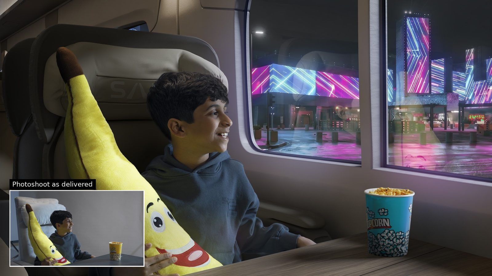
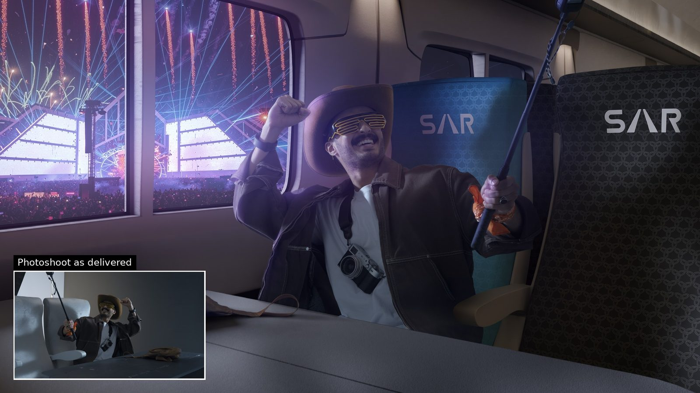
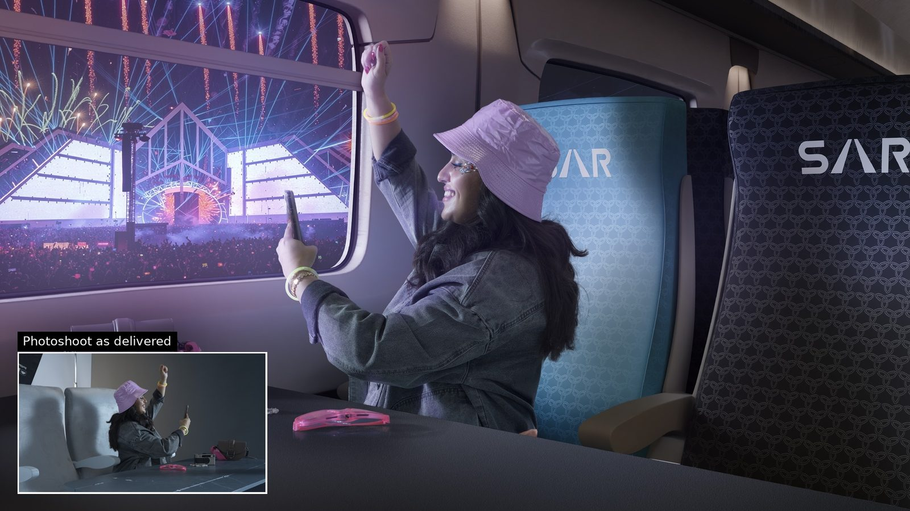
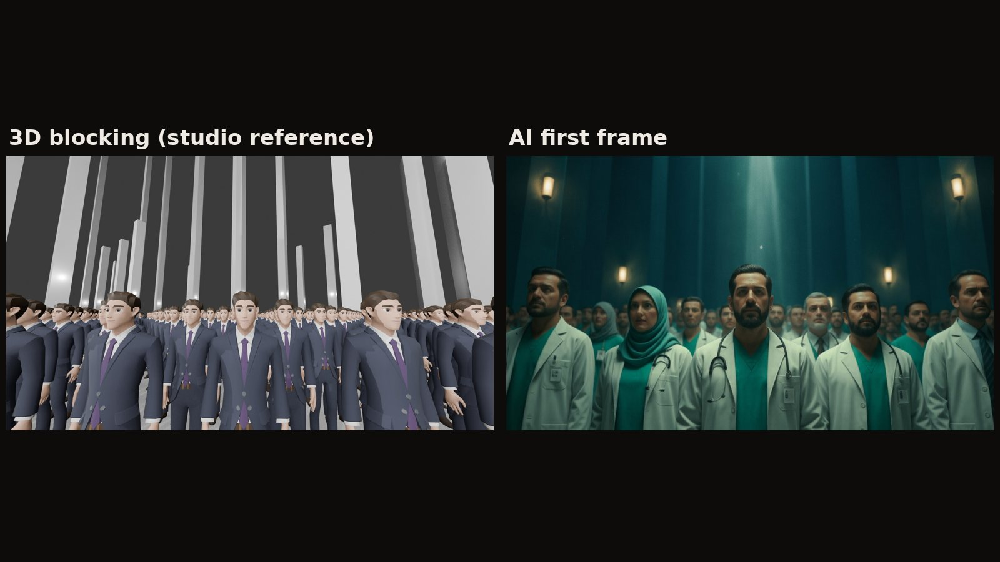

Client work · 2025–now
Client work for Saudi production teams
AI imagery and video inside real productions, alongside CGI and VFX.
The brief
Since June 2025 I've worked freelance with production teams in Saudi Arabia, delivering AI imagery and video inside productions that also use CGI and conventional VFX. Clients aren't named here, so each job is described by what it needed.
What I did
- Built historical environments and characters for a heritage promotional film (Diriyah), revising frames from detailed cultural notes (architecture, wardrobe, crowd density, props) before converting the approved frames to video.
- Produced about half the visuals of a ten-minute healthcare presentation film that mixes AI imagery, video generation, CGI and VFX, turning the studio's 3D blocking into finished AI frames.
- Rail campaign: the actors were photographed on an empty set. I added the train carriage, the window views and matched the lighting to the passengers (final retouch by another artist).
- Rescued shots an earlier VFX approach couldn't deliver: the head-through-the-ceiling shot from green screen (my AI version replaced the studio's CG and was used in the final ad), a frozen performer with only his headscarf moving, and a camera move extended into a transition.
Tools
- AI image generation
- Image-to-video
- Working alongside CGI & VFX
- Lighting match
How a revision-heavy job runs
On the promotional film, stills were approved before anything moved. Revising a frame is cheap; revising a video is not.
Cultural notes
Detailed notes on architecture, wardrobe, crowd density and props.
Revised frames
Environments and characters regenerated and edited until they match the notes.
Approval
The production team signs off on the stills.
Image-to-video
Only approved frames are converted to video.
Rail campaign: from an empty set to a train carriage



Shots an earlier approach couldn't deliver
Healthcare film: from 3D blocking to motion

Product spots
Results
- of the visuals in a ten-minute presentation film
- ~50%
- shots rescued after an earlier VFX approach
- 3
- freelancing since, ongoing
- Jun 2025